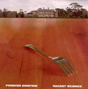

| Artist: | Forever Einstein |
| Title: | Racket Science |
| Label: | Cuneiform Records Rune 206 |
| Length(s): | 50 minutes |
| Year(s) of release: | 2005 |
| Month of review: | [09/2005] |
| 1) | How Come The Wrong People Are Always In Charge? | 3.26 |
| 2) | You're Living In A World Of Make-Believe With Flowers And Bells And Leprachauns And Magic Frogs With Funny Little Hats | 3.55 |
| 3) | It's A Good Thing I Don't Have Super Brain Powers Or You'd Be In A Thousand Little Pieces Right Now | 3.18 |
| 4) | They're Portable, They're Annoying And They Cost Three Dollars A Case | 2.52 |
| 5) | I'm Trying To Contain An Outbreak Here And You're Driving The Monkey To The Airport | 4.26 |
| 6) | It's Almost Impossible To Concentrate Here In This Cafe With All These Leggy Belgian Girls Walking Around In Miniskirts | 6.05 |
| 7) | God Has A Plan For Me, And It Involves Puppets | 2.26 |
| 8) | I Wish I Had Me Some Of Them Miracle Smart Pills | 4.26 |
| 9) | I Got My Picture Taken, I Got Forty Dollars And I Get To Keep The Underwear | 7.04 |
| 10) | There's Some Milk In The Fridge That's About To Go Bad...And There It Goes | 8.06 |
| 11) | Every Word Out Of Your Mouth Is Like A Turd Falling In My Drink | 2.58 |
| 12) | He Looks Interesting - And By Interesting I Mean Weird | 1.36 |
Samples of Racket Science appear here by kind permission of Cuneiform Records.
You're Living In A World Of Make-Believe With Flowers And Bells And Leprachauns And Magic Frogs With Funny Little Hats is probably the longest title on this album, but certainly not the longest song. The style does not change overly much. The playing is still fluent and more tuneful than melodious (I wonder whether that makes sense to anyone). The guitar is also a bit 'rock 'n' roll' here, sounding very surf like.
There we go for again: It's A Good Thing I Don't Have Super Brain Powers Or You'd Be In A Thousand Little Pieces Right Now. This time, a light passage is alternated with one that features rather sharp guitar work. The music is closer to the usual Cuneiform fare, but does have its quirky aspects.
They're Portable, They're annoying And They Cost Three Dollars A Case opens percussively. Typically American styles continue to dominate: surf, rock 'n' roll, and the like, but never really rocking out, always with a strong sense of melody and a certain restraint.
Track lengths are going up a bit with I'm Trying To Contain An Outbreak Here And You're Driving The Monkey To The Airport. The style of this song makes that it might be used sometime in a Tarantino movie. The distorted psyche guitar might not be viewed as particularly fitting then, but it is nice to hear some heaviness in places. It closes with a nice dreamy passage.
It's Almost Impossible To Concentrate Here In This Cafe With All These Leggy Belgian Girls Walking Around In Miniskirts opens percussively again. The band moves in jazzy, bass dominant style here, with occassional melodic/percussive outbursts.
God Has A Plan For Me, And It Involves Puppets is by now typical for this album, although it is tad faster and rockier than usual. The style is dominantly surf. I Wish I Had Me Some Of Them Miracle Smart Pills is more stop-and-start style, with a fast countryish riff in the first half, and a moody jazz intermezzo smack in the middle. Then the up-beat tunes return.
I Got My Picture Taken, I Got Forty Dollars And I Get To Keep The Underwear is quite a bit longer again. The guitar sound is somewhat hypnotic and the drums are very much to the fore. The guitar sound has something ehm desert like.
The longest track is There's Some Milk In The Fridge That's About To Go Bad...And There It Goes. Stilistically there are not really any changes, except that I can remark that this is one of the faster and also heavier tunes (the latter only in places). The second part is echoey and relaxed. Then we get a more pyshce like guitar piece, one might say that this is a part where the sound is more seventies like, than anything that dates from quite a bit before. Notwithstanding, the song is not without its short repetitive ingredients that pop up here and there. The final part is a bit scary.
Every Word Out Of Your Mouth Is Like A Turd Falling In My Drink is one the less friendly titles. The sound seems a bit louder, closer if you like. One may wonder why. The song is very percussive with a relaxed surf guitar playing right through. We seem to be moving into country country in the middle part: clippety-clop, yeehah and all that stuff. The short closer is He Looks Interesting - And By Interesting I Mean Weird, with reversed guitar play.